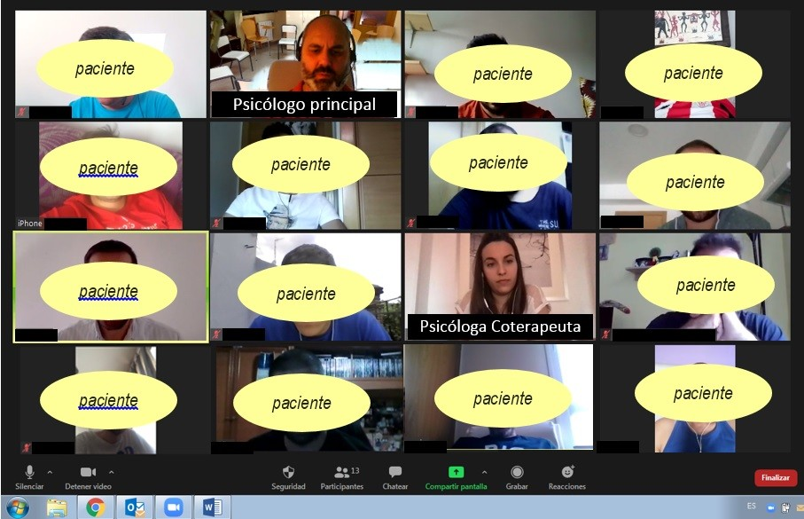

Terapia individual: tu espacio, tu tiempo
La terapia individual te ofrece un espacio privado y seguro donde puedes explorar tus pensamientos, emociones y comportamientos con la guía de un profesional. A través de sesiones personalizadas, podrás trabajar en tus desafíos emocionales, encontrar soluciones prácticas y fortalecer tu bienestar mental, todo a tu propio ritmo.
Este proceso te ayuda a identificar patrones, mejorar tu autoestima y desarrollar herramientas para manejar situaciones difíciles. La terapia individual te ofrece el acompañamiento necesario para que puedas vivir de manera más consciente y plena.
Beneficios de la Terapia Individual
Autoconocimiento: Entiende mejor tus pensamientos y emociones.
Mejora emocional: Aprende a manejar la ansiedad y el estrés.
Crecimiento personal: Desarrolla habilidades para una vida más equilibrada.
Relaciones saludables: Mejora tu relación contigo mismo y con los demás.
Confianza y autoestima: Fortalece tu autoconfianza y bienestar emocional.
La terapia individual es una inversión en tu bienestar y crecimiento. Estamos aquí para acompañarte en cada paso de este proceso.

Terapia de pareja: reconecten juntos
La terapia de pareja es una herramienta efectiva para mejorar la comunicación, resolver conflictos y reforzar los lazos emocionales entre tú y tu pareja. A través de un proceso guiado por un terapeuta especializado, ambos podrán explorar sus sentimientos, necesidades y expectativas, creando un espacio seguro para el entendimiento mutuo. Este tipo de terapia les ayudará a superar obstáculos y a fortalecer su relación en tiempos difíciles.
Las relaciones de pareja pueden enfrentar retos como la falta de comunicación, malentendidos o diferencias emocionales. La terapia de pareja ofrece un enfoque práctico para resolver estos problemas, promoviendo la empatía, el respeto y la conexión profunda. Al trabajar juntos en el proceso terapéutico, aprenderán a mejorar su dinámica y a manejar las dificultades con mayor comprensión.
Beneficios de la Terapia de Pareja
Mejora de la comunicación: Aprende a expresar tus sentimientos de manera clara y efectiva.
Resolución de conflictos: Desarrolla herramientas para abordar desacuerdos de forma saludable.
Mayor empatía: Fomenta una mejor comprensión de las necesidades de tu pareja.
Fortalecimiento del vínculo: Reaviva la conexión emocional y la confianza.
Crecimiento compartido: Trabaja en equipo para crecer juntos y alcanzar objetivos comunes.
La terapia de pareja no solo soluciona problemas, sino que también ayuda a construir una relación más sólida y satisfactoria. Si deseas mejorar la calidad de tu relación, estamos aquí para apoyarte en cada paso.

Terapia grupal
La terapia grupal es un espacio donde varias personas con experiencias similares se reúnen bajo la guía de un profesional para compartir, aprender y sanar colectivamente. Al interactuar con otros, podrás identificar que no estás solo en tus desafíos, y experimentar el poder del apoyo mutuo. Este tipo de terapia fomenta el crecimiento emocional al aprender de las experiencias de los demás, creando un ambiente de empatía y comprensión compartida.
A través de las sesiones grupales, los participantes pueden explorar sus problemas y desarrollar nuevas perspectivas. Al ser parte de un grupo, cada miembro puede aportar su visión, lo que enriquece el proceso terapéutico y ofrece nuevas soluciones a los problemas individuales. Además, la terapia grupal proporciona un entorno seguro para practicar habilidades sociales y de comunicación, esenciales para el bienestar emocional.
Beneficios de la Terapia Grupal
Apoyo mutuo: Conecta con personas que enfrentan desafíos similares.
Perspectivas diversas: Aprende de las experiencias y soluciones de los demás.
Mejora social: Desarrolla habilidades para mejorar tus relaciones interpersonales.
Empatía: Fomenta un espacio de comprensión y respeto entre los miembros del grupo.
Costo accesible: Es una opción más económica comparada con la terapia individual.
La terapia grupal es una excelente forma de sanar y crecer junto a otros. Si estás buscando un espacio donde puedas compartir y aprender de la experiencia colectiva, este proceso te ayudará a avanzar de manera significativa en tu bienestar emocional.